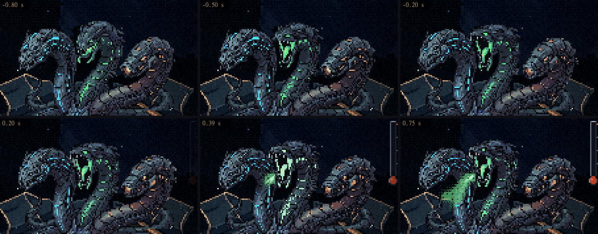
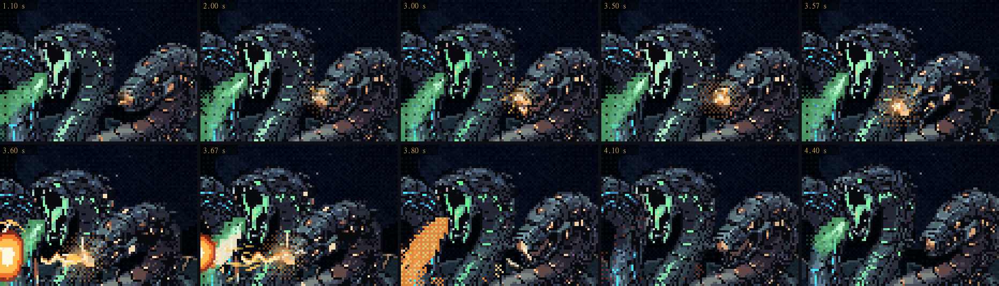
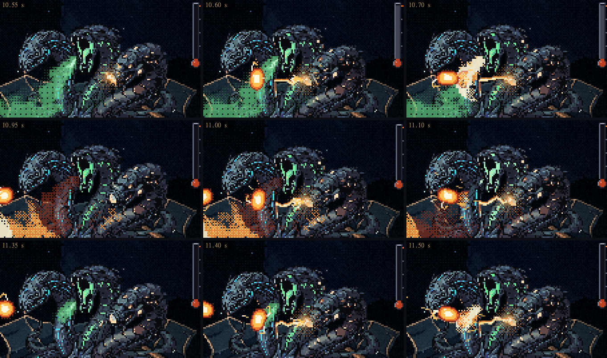
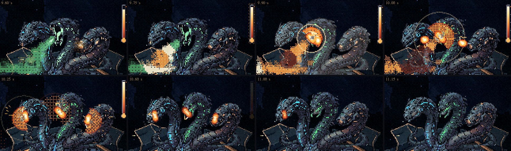
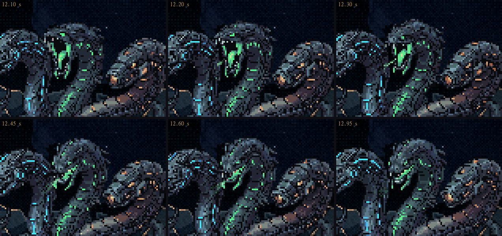

A Serpente: a verde e a laranja se mexem
02/11/2026 · rodada 13 das habilidades (o gás + a faísca): os gestos do PixelLab e os efeitos juntos · nada foi commitado.
Suas escolhas: a verde abre e despeja (boca aberta para baixo, o pescoço bombeando com as baforadas), a laranja recua e dá o bote (recua tremendo na carga, bica na faísca e o arco sai do focinho), um gesto só para os três padrões (o arco continua sendo o aviso; na fila, três bicadas) e, no contra, as três se encolhem. Você pediu os efeitos junto, nesta mesma folha.
A mecânica não mudou: as faíscas saem nos mesmos instantes (3,6 / 7,1 / 10,6 s), com as mesmas esquivas e o mesmo termômetro. Os efeitos usam um sorteio próprio.
As maquetes
Os gestos


- A laranja continua com o focinho de canhão. Nos clipes em que ela abria uma bocarra de dentes, a cabeça virava outra em um quadro. Pedi de novo mantendo o focinho e a lente, e só a mandíbula de baixo cede.
- O bote é uma bicada curta. O bote longo cruzava na frente do pescoço da verde e passava da bolsa de gás que a faísca acerta por trás. Ficou: carga → meio → pico e volta, com o arco saindo no pico.
- O pescoço da verde bombeia quando a laranja está parada: no começo do sopro e nas pausas entre as cargas. Cada quadro do PixelLab é a serpente inteira, e juntar o gesto de uma cabeça com o de outra no mesmo quadro seria emenda. As luzes da verde pulsam com as baforadas o tempo todo.
- No contra, a laranja solta a carga (o gesto de carga tocado de volta) enquanto o fogo corre até a boca. Com a carta, o fogo chega em 0,1 s, e o encolher começa no meio dessa volta, junto com a explosão na cara.
Ampliados





Os efeitos
- As luzes da verde pulsam com cada baforada: só os pixels de luz verde da própria cabeça e do pescoço.
- As luzes da laranja acendem com a carga e ficam acesas até a última faísca. Pequenos arcos elétricos rastejam no focinho, mais à medida que a carga enche.
- Cada bicada: a tela dá um tranco de 1 px, sai uma fumaça do focinho na direção do golpe (reta, sem subir: é vácuo) e descargas correm pelo focinho, fortes na última faísca.
- Ao fechar, o último sopro escapa da boca da verde e some.
- No contra, o tranco de mola que era feito em código saiu, e quem reage é o gesto do PixelLab. O clarão quente, a tela tremendo e a geleia grudada continuam.
Medidas
| folga do manequim | rodada 7 | agora |
|---|---|---|
| 1ª esquiva, o leque | 17,0 px | 15,6 px |
| 2ª esquiva, os trilhos | 12,7 px | 14,5 px |
| 3ª esquiva, a fila | 17,3 px | 17,1 px |
| toques na nave | 0 | 0 |
- Com a boca aberta, a verde solta o gás 4 px mais à esquerda e 2 px mais abaixo que no idle, por isso as folgas mudaram um pouco. No modo atirando, o termômetro enche em 9,63 s (era 9,77 s).
- Sem os gestos, a maquete continua idêntica à rodada 7 aprovada, quadro a quadro nos três modos.
- Continuidade da cabeça: no máximo 4% do desenho muda de um quadro para o outro nas esquivas, sem saltos. No contra o maior é 13%, no estalo do encolher.
Para você decidir
- Os gestos: a verde abrindo e bombeando, a laranja recuando e bicando, e as três se encolhendo estão bons?
- Os efeitos: a força está boa? (as luzes das duas, os arcos no focinho, a fumaça, o tranco)
- O bote: a bicada curta fica, ou quer um bote maior?
- O próximo passo: o visual dos projéteis, ou já instalar as habilidades no jogo?